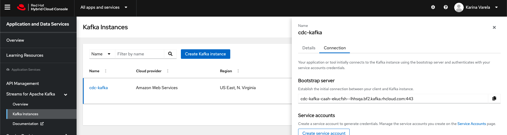
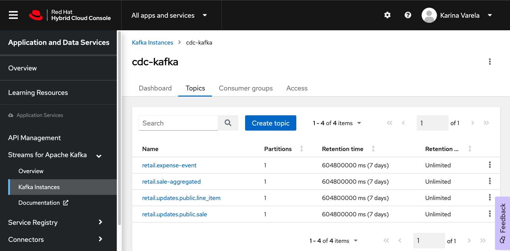
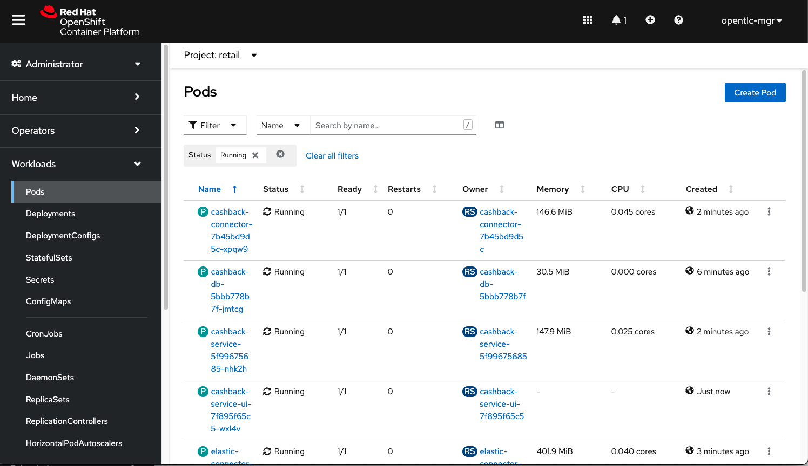
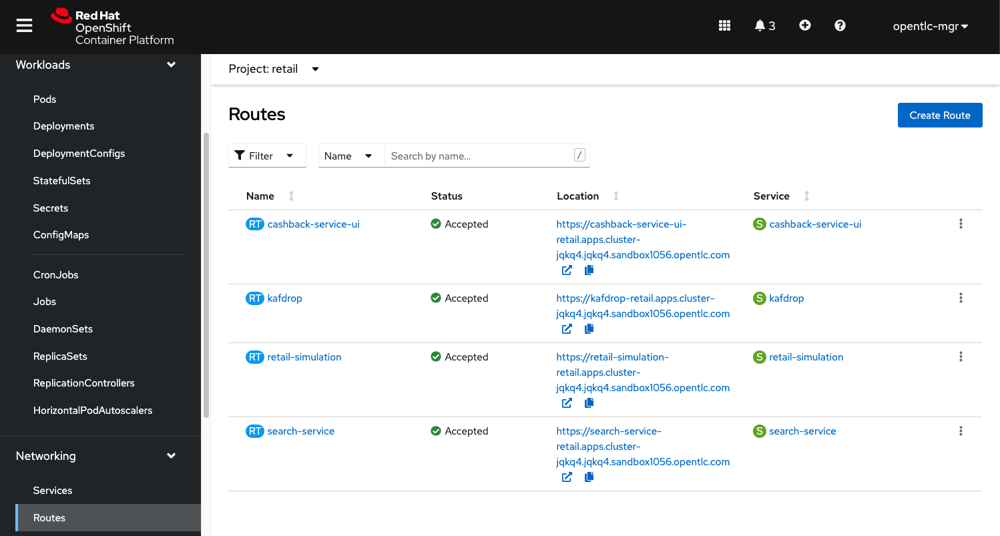
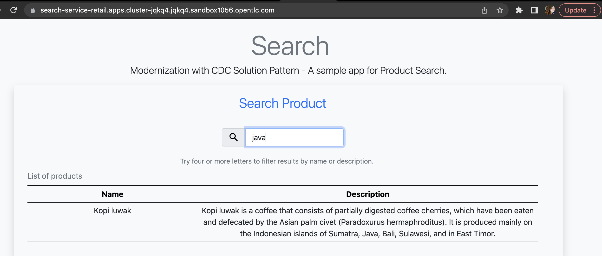
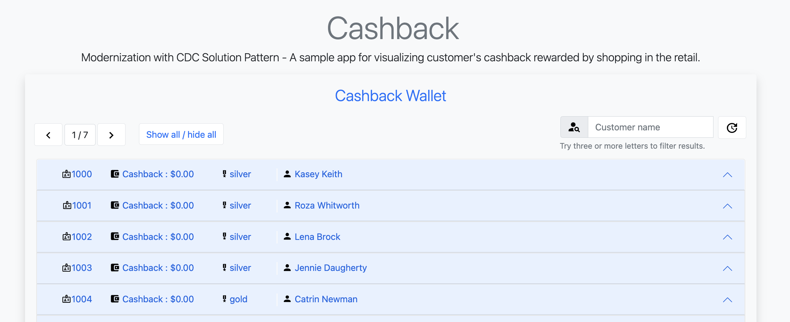
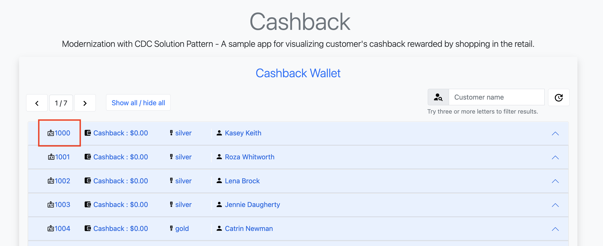

Solution Pattern: Using Change Data Capture for Stack Modernization
This section brings information about the implementation of the solution pattern, how you can install it, try it out and check the details of the implementation with an actual running application.
1. See the Solution in Action
1.1. The enhanced search
In this video you can see the working implementation of the new enhanced search capabilities:
1.2. The cashback wallet
The following video shows the working implementation of the new cashback wallet capabilities:
2. Run this demonstration
In order to try out this demonstration you will need to provision the environment. From an overall perspective, these are the steps to provision the demo:
-
Log in to OpenShift with
cluster-adminrole; -
Create an OpenShift Streams instance, configure ACL and topics;
-
For ansible, configure the set of variables pointing with your environment settings;
-
Run the ansible playbook and enjoy the demo.
The video below demonstrates how to do the provisioning that is described in details the next sections. You can follow the provisioning steps as you follow the video.
2.1. Pre-requisites
2.1.1. Preparing the local environment
Here is the list of tools you need in your machine to so you can use the automated installation.
| For a better experience during provisioning and demo usage, it’s recommended to have these CLI tools installed locally. |
-
Ansible CLI (tested with v2.9)
-
Ansible kubernetes.core module
-
-
(optional) RHOAS CLI for OpenShift Streams management.
To check if you have the cli tools, you can open your terminal and use following commands:
oc version #openshift cli client
ansible --version
ansible-galaxy --version
ansible-galaxy collection list #the list should include kubernetes.coreIf you can’t see kubernetes.core collection listed, you can install it with ansible-galaxy:
$ ansible-galaxy collection install kubernetes.coreOptional: Managing OpenShift Streams using a CLI tool
It is possible to do all interaction with your OpenShift Streams managed service (kafka) via the web console. If instead you like using the terminal and want to use a CLI tool, you will need rhoas cli. This cli allows interaction with Red Hat OpenShift Application Services like the OpenShift Streams kafka we will use.
You can find a straightforward installation guide for multiple OS at Installing the RHOAS CLI.
2.1.2. Preparing the platforms
-
OpenShift cluster (version >= 4.9) with cluster-admin privileges.
If you have access to rhpds, you can request and use an OpenShift 4.10 Workshopenviroment. -
Access to OpenShift Streams for Apache Kafka.
If it’s your first time using OpenShift Streams, don’t worry. It’s a zero-cost service for developers and everyone can try it out. You can register and order your instance at https://red.ht/TryKafka.
2.2. Provisioning the demo
The solution’s components and services can be automatically provisioned using an ansible playbook.
The following steps will guide you on setting up an instance of OpenShift Streams for Apache Kafka and its resources, plus provisioning the demo services using Ansible.
2.2.1. Provisioning OpenShift Streams (Kafka)
Before moving ahead to the steps of provisioning the services within your OpenShift cluster, first you should provision and configure your Kafka instance.
| If you need detailed instructions on how to provision, configure and operate of your managed Kafka instance, please check this step-by-step Getting Started with OpenShift Streams for Apache Kafka guide. |
See below a straightforward guide to create and your instance:
-
Navigate to https://console.redhat.com and log in with your Red Hat Account ID;
-
Select the Service Account menu and create a new Service Account to connect to your Kafka instance;
Take note of the service account id and password, you’ll need both information during the provisioning. -
Next, in the left menu, select Application and Data Services → Streams for Apache Kafka → Kafka instances;
-
Create a new Kafka instance;
-
Use a name of your choice. You can use the default values for creating the instance.
-
-
Once your instance is ready, click on the instance and open the "connection" tab. take note of the following data:
-
Bootstrap server (e.g. cdc-kafka-caah-ekucfsh—lhhsqa.bf2.kafka.rhcloud.com:443)

-
-
Configure the ACL for your Service Account. The Service Account should have the following permissions:
-
read,write,createpermissions for all topics -
readpermissions for all consumer groups -
If you have
rhosakCLI installed, you can execute the following commands to login to the service, select your kafka instance and add the proper configuration, replacingsrvc-acct-9999with your service client id:If you do not use the right service account id, the deployed services will throw an authentication error. rhoas login rhoas kafka list rhoas kafka use rhoas kafka acl grant-access --producer --consumer --service-account srvc-acct-9999 --topic all --group all -y
-
-
Create the following topics, all with 1 partition:
-
retail.sale-aggregated -
retail.expense-event -
retail.updates.public.line_item -
retail.retail.updates.public.sale -
retail.updates.public.customer -
retail.updates.public.product -
if you are using
rhoas cli, you can create the topics with these commands:rhoas kafka topic create --name=retail.sale-aggregated --partitions=1 rhoas kafka topic create --name=retail.updates.public.customer --partitions=1 rhoas kafka topic create --name=retail.updates.public.product --partitions=1 rhoas kafka topic create --name=retail.updates.public.sale --partitions=1 rhoas kafka topic create --name=retail.updates.public.line_item --partitions=1 rhoas kafka topic create --name=retail.expense-event --partitions=1
-
2.2.2. Installing the demo
This solution pattern offers an easy installation process through ansible automation and helm charts. To get your environment up and running, follow the steps below:
-
Clone the repository below to your workstation
git clone https://github.com/solution-pattern-cdc/ansible.git cd ansible -
Copy the
inventories/inventory.templatefile toinventories/inventory; -
Remember the OpenShift Streams values we took note? It’s time to use them. In the
inventories/inventoryfile, provide the connection details for your Kafka instance:-
rhosak_bootstrap_server: Bootstrap server of your managed Kafka instance;
-
rhosak_service_account_client_id: Client ID of your Service Account;
-
rhosak_service_account_client_secret: Client Secret of your Service Account;
-
-
Run the Ansible playbook:
ansible-playbook -i inventories/inventory playbooks/install.yml
Once the playbook finished successfully, you should be able to see the different components of the demo installed in the retail namespace on your OpenShift cluster.
To check if your environment is healthy:
-
Access your OpenShift console, and using the Administrator view, on the left menu select Workloads → Deployments;
-
All services should be healthy, like displayed below:

2.3. Obtaining services' URL
You can access the three services that exposes a UI through the exposed routes. Use one of the two options below to get the routes:
-
Using
oc cli, copy and paste the whole command below:cat << EOF ======================================== Kafdrop: https://$(oc get route kafdrop --template='{{ .spec.host }}' -n retail) Search service: https://$(oc get route search-service --template='{{ .spec.host }}' -n retail) Simulation Service: https://$(oc get route retail-simulation --template='{{ .spec.host }}' -n retail)/q/swagger-ui Cashback Wallet UI: https://$(oc get route cashback-service-ui --template='{{ .spec.host }}' -n retail) ======================================== EOF -
Using the OpenShift console:

3. Walkthrough guide
A retail store specialized in plants wants to grow its market by expanding in the online market. To do so, they need to start the adoption of new technologies without impacting the existing application that is currently running in production. All information about sales, customers and products are still maintained via legacy application, but this data is also required by the new capabilities.
Two new functionalities are now part of the retail solution: 1. Enhanced search capabilities for products 1. Cashback wallet for customers
Both solutions are build on top of an event driven architecture, which means that all services are integrated with an orchestration where each one execute its own operations when relevant events are published in the ecosystem.
Let’s see both solutions in action, starting with the new search capabilities.
3.1. Enhanced search capabilities for products
To test the enhanced search capabilities, we will:
-
Use the
search serviceto see existing data that is available in the ElasticSearch index; -
Add a new product directly to the
retail database(legacy), to check the ecosystem behavior; -
Confirm that the new product shows up in the search;
-
Check the events that were published in order for the synchronization to happen;
-
Delete the product directly on the retail database;
-
Confirm that the product no longer shows up in the
search service.
3.1.1. Trying out the new enhanced search
-
Using your browser, open the
search service.You can get the URL as described in the section obtaining the services URL. -
In the search field, search for "yellow". You should see several results.

-
Next, search for "kopi" or "java. No result will show up.
-
Let’s insert a new product directly in the
retail-dband see if it will reflect on this service. Use the console inside theretail-dbcontainer. You can either access the container using your browser, accessing the OpenShit Console (Workloads → Pods → retail-db-XXXX → Terminal);Or by using your terminal as shown below:
oc project retail oc rsh deployment/retail-db -
Next, inside the container, we will access postgres, connect to the
retaildatabase and check the structure of theproducttable:psql \c retail \d productAs we can see, a product has an
id,name,descriptionand aprice.
-
Let’s add a new product in this table, the product "Kopi luwak":
insert into public.product (product_id, name, price, description) values (7777, 'Kopi luwak', 20, 'Kopi luwak is a coffee that consists of partially digested coffee cherries, which have been eaten and defecated by the Asian palm civet (Paradoxurus hermaphroditus). It is produced mainly on the Indonesian islands of Sumatra, Java, Bali, Sulawesi, and in East Timor.'); -
Now, as required by the use case, even though this data was changed in the legacy database, it should be available for search in the new services. Let’s confirm that this change was reflected in the ElasticSearch products index.
Open the
search-serviceapplication in your browser and search for "java" or "kopi". You should be able to see your new product.
Let’s delete this product from the retail database to validate if delete operations are also being tracked.
-
In the
retail-tbcontainer terminal, now execute the following SQL:
DELETE FROM public.product where product_id = 7777;-
Go back to the
search-servicein your browser, and search for 'kopi' or 'java' again.
3.1.2. Looking behind the scenes - enhanced search
It’s now time to take a look at how the system is working in order to allow this capability to work as we have seen.
The components of the search capability we have just tried are:
|
Type |
Description |
|
PostgreSQL database used by the legacy services; |
Persistence |
|
Integration |
Kafka connectors for database event streaming (debezium); |
|
Camel + Quarkus service for event-driven synchronization of product data with ElasticSearch; |
|
|
Data Visualization |
a kafka client ui to facilitate the visualization of events and topics; |
|
Quarkus + ElasticSearch extension to simplify the visualization of the indexed data residing in elastic search; |
If you go to your OpenShift, you should be able to see one deployment resource for each of the above services.
|
So, how was the new product added to the ElasticSearch index?
-
A new product is created in the
retail.producttable, in the legacy databaseretail-db; -
Debezium tracks it and publishes the events it to topics in OpenShift Streams;
-
The
elastic-connector, implemented with Camel and Quarkus is subscribed to the topic mentioned above. It processes the event data and pushes the product name and description to an ElasticSearch index:
ProductRoute(...)
.process(exchange -> {
Message in = exchange.getIn();
JsonObject after = new JsonObject(in.getBody(Map.class)).getJsonObject("after");
Map<String, String> document = new HashMap<>();
document.put("name", after.getString("name"));
document.put("description", after.getString("description"));
IndexRequest request = new IndexRequest(in.getHeader(ElasticsearchConstants.PARAM_INDEX_NAME, String.class))
.id(String.valueOf(after.getLong("product_id"))).source(document);
in.setBody(request);
})
(...)This flow can be represented like this:
3.2. Cashback Wallet functionality
Now, let’s see more ways we can explore CDC to add new capabilities to our existing stack. Since we have all the new sales being streamed as events, we can use it to build the new cashback wallet business.
To walk through this demonstration, you will need to access the following services in your browser: * cashback-service-ui * kafdrop * simulation service Swagger-UI
3.2.1. Trying out the new cashback wallet
-
Open the
cashback-service-ui:You can get the URL as described in the section obtaining the services URL. -
You should be able to see a list of cashback wallets and its data:
 -
Choose one of the customers in that list that has no cashback. It will be easier ot see the new cashback credits. You can see the customer ID in the beggining of the line:
 -
Next, we will simulate as if a customer has purchased five items in the store. In your browser open the
simulation serviceswagger-ui, (service-url/q/swagger-ui).
-
Click on
try it out, input the customer ID you have chosen, and submit the request. This will generate five purchases for this customer.
-
You should get an HTTP 200 result. In the legacy system, the purchases are stored in two different tables, the
retail.saleandretail.line_item. So if you simulate five sales, the data will be stored in both tables and streamed as events by Debezium to two respective topics.Through a series of orchestrated operations, the data will be aggregated, processed, and enriched (
sales-aggregatedservice), to finally be used to calculate and update the cashback wallet’s values (cashback-service). -
Open Kafdrop in your browser.
-
Locate and click on the topic
retail.sale-aggregated, and then, click on view messages. This is the result of the Kafka Streams (sales-streamservice) operations of aggregation, processing and enrichment of the events' data that were streamed by Debezium:
To see a detailed explanation about the events processing refer to the Looking behind the scenes section. -
Open the Cashback Wallet in your browser and refresh the page. You should be able to check the new earned cashback for each purchase of your customer!

See below a diagram that represents the orchestration processing that just happened when you simulated new purchases and saw the respective incoming cashback:

3.2.2. Looking behind the scenes - cashback solution
Differently than the search capability that only requires the integration layer (Retail DB → ElasticSearch), to create cashback wallets we’ll need to process and enrich the data before we use it. We will also need to guarantee the synchronization between the customer data in the retail-db and the cashback-db.
-
When a new sale is registered, new lines are created in the
retail.saleandretail.line_itemtables. -
Debezium then tracks and publishes events to two topics, one for each respective table, and one event for each respective line added/updated event that was tracked. But notice that in order for us to apply the cashback calculation business logic, we’ll have in mind good design and architecture practices for microservices, where each microservice "is supposed to do one thing, and do it well". So, the event data aggregation, processing and enrichment will be executed by a service (
sales-streams) before we actually do the cashback operations in another service (cashback-service);Here’s another way to explain this:
-
if someone buys two cactus and one lilly in the same purchase, there will be two line_items registered for a single sale. See below the tables structures:
$ oc rsh deployment/retail-db (1) sh-4.4$ psql (2) psql (12.5) Type "help" for help. postgres=# \c retail (3) You are now connected to database "retail" as user "postgres". retail=# select * from sale; (4) sale_id | customer_id | date ---------+-------------+------------------------- 1000 | 1000 | 2022-06-03 20:27:57.66 1001 | 1000 | 2022-06-03 20:27:57.767 1002 | 1000 | 2022-06-03 20:27:57.852 1003 | 1000 | 2022-06-03 20:27:57.854 1004 | 1000 | 2022-06-03 20:27:57.857 (5 rows) retail=# select * from line_item; (5) line_item_id | sale_id | product_id | price | quantity --------------+---------+------------+--------+---------- 1000 | 1000 | 198 | 99.40 | 2 1001 | 1000 | 851 | 72.97 | 3 1002 | 1000 | 87 | 66.19 | 3 1003 | 1000 | 243 | 83.20 | 1 1004 | 1001 | 80 | 127.56 | 3 1005 | 1001 | 639 | 193.80 | 1 1006 | 1002 | 563 | 156.08 | 3 1007 | 1003 | 532 | 89.98 | 3 1008 | 1003 | 374 | 87.17 | 1 1009 | 1003 | 932 | 32.69 | 3 1010 | 1003 | 662 | 141.31 | 3 1011 | 1003 | 304 | 39.84 | 1 1012 | 1004 | 138 | 125.81 | 3 1013 | 1004 | 656 | 103.99 | 3 1014 | 1004 | 285 | 168.79 | 3 1015 | 1004 | 84 | 113.79 | 2 (16 rows)1 Use oc-clientto access theretail-dbcontainer;2 Access PostgreSQL from within the container; 3 Connect to the retail database; 4 List all the sales; 5 List all the items of the sales; -
Debezium will stream each change individually, which results with several events in two topics, one of each table.
-
But, when we calculate the earned cashback for the sale, we use the total amount of the sale - the sum of all the line items of that sale.
-
Using Kafka Streams, the
sales-aggregatedservice aggregates, processes and enriches the events' data.Partial code in theSales-Streamsservice used to aggregate and enrich data;// Join LineItem events with sale events by foreign key, aggregate Linetem price in sale KTable<Long, AggregatedSale> aggregatedSales = lineItemTable .join(saleTable, lineItem -> lineItem.sale, (lineItem, sale) -> new SaleAndLineItem(sale, lineItem), Materialized.with(Serdes.Long(), saleAndLineItemSerde)) .groupBy((key, value) -> KeyValue.pair(value.sale.saleId, value), Grouped.with(Serdes.Long(), saleAndLineItemSerde)) .aggregate(AggregatedSale::new, (key, value, aggregate) -> aggregate.addLineItem(value), (key, value, aggregate) -> aggregate.removeLineItem(value), Materialized.with(Serdes.Long(), aggregatedSaleSerde)); aggregatedSales.toStream().to(aggregatedSaleTopic, Produced.with(Serdes.Long(), aggregatedSaleSerde));
-
-
Next, if you go back to the homepage of Kafdrop, open
retail.expense-event→ view messages → view messages; Thesales-streamsservice to notify the ecosystem that new processed information is available by publishing events on theexpense-eventtopic.Let’s see the result of this processing with Kafdrop.

Based on these events published in the
expense-event, services like thecashback-servicecan react and use the event data to handle the cashback business logic operations.See how the values are calculated and persisted in the cashback values processor in the cashback-service-
Let’s take a look over the cashback service processing:
Partial code implementation in the Cashback Route in the cashback-service.from("kafka:{{kafka.expenses.topic.name}}?groupId={{kafka.cashback_processor.consumer.group}}" + (1) "&autoOffsetReset=earliest") .routeId("CashbackProcessor") .unmarshal(new JacksonDataFormat(ExpenseEvent.class)) .setHeader("operation", simple("${body.operation}")) (2) .setHeader("sale_id", simple("${body.saleId}")) (2) .to("direct:filterInvalidOperationCodes") (3) .to("direct:getData") (4) .to("direct:filterInvalidData") (5) .choice() .when().simple("${header.operation} == 'c'").log(LoggingLevel.DEBUG,"Processing create event") (6) .process("valuesProcessor") .choice() .when(simple("${body.cashbackId} == null")) .log(LoggingLevel.DEBUG, "No cashback wallet exists. Creating new cashback for: ${body}") .to("direct:createAndPersistCashback") .end() .to("direct:updateEarnedCashbackData") .endChoice() .otherwise().when().simple("${header.operation}== 'u'").log(LoggingLevel.DEBUG,"Processing update event") (7) .process("valuesProcessor") .to("direct:updateEarnedCashbackData") .end();1 Consumed topic with name configured in the property kafka.expenses.topic.name;2 Sets incoming information in the message header; 3 Filter out incoming operations that are not createandupdate;4 Retrieves existing customer and cashback information from the local database for the incoming sale; 5 Filter out information for incoming data that is invalid - is not in the cashback database; 6 When a new expense "create" event is received, the service checks if the customer already has a wallet - if not, creates one. Then, it updates the cashback wallet values calculated and persisted. 7 If the incoming operation is "update", then, a new wallet does not need to be created. The values are calculated and updated.
-
4. Conclusion
In this section you have learned how to:
-
Provision the demo environment;
-
How to try out and check how CDC enables the delivery of the demo implementation:
-
How a new search index technology could be added to the existing solution and enable enhanced search capabilities for legacy data;
-
How a whole new cashback wallet capability could be added without impacting the legacy systems by using a distributed, event-driven and microservice-based architecture;
-
-
Learn in-depth details about services can be orchestrated;
The solution is built on top of a hybrid cloud model, with containerized services running on OpenShift (can be on a private or public cloud depending on how you provision the demo) consuming a managed OpenShift Streams for Apache Kafka. OpenShift streams is heart of this solution - it’s a resilient and highly available Kafka instance managed by Red Hat, where all the topics reside and where all services can receive and send all events from/to.
This design is only possible by the designing the architecture based on the Change Data Capture pattern - which was delivered with Debezium and Kafka Connectors.